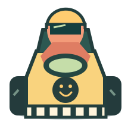

SMALL KART. BIG SMILE.
先別慌，
彎過去就好！

DORADRIFT CLUB
自動踩油門，你只管左右轉。
躲香蕉、吃星星，蓄滿甩尾放開就衝刺！
怎麼開？
手機：按住左右鍵轉向；或在賽道上左右拖動。按住「甩尾」同時轉向累積能量，鬆開甩尾就加速。
電腦：← → 或 A / D 轉向，空白鍵或 Shift 甩尾，P 暫停。吃星星增加收集數；彩色道具箱會給加速或護盾。香蕉和路障會讓你慢一下，但不會淘汰。
原創單機街機遊戲，3 台電腦對手。重玩會換道具與障礙位置。沒有帳號，不記錄個人資料。
名次4 / 4
圈數1 / 2
星星0
時速0
甩尾能量
可直接在賽道上左右拖動。離開分頁會自動暫停。
FINISH LINE / 今日不慌張
平安完賽！
本局時間
收集星星
成功衝刺
撞到不會淘汰，能回來繼續開就算厲害。這是街機式簡化賽車，不是駕駛訓練。